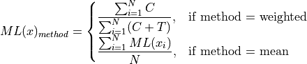

dmtools regionstats
Description
DMtools provides an regionstats command that can be used to calculate the DNA methylation level
within a user-specified region of interest.
This functionality is highly useful for researchers who may be interested in the methylation level
of specific genes, transposable elements (TEs), or other regions of interest.
By using the dmtools regionstats command, researchers can quickly and easily calculate the
methylation level of each region of interest, and perform further analysis and comparison.
This is crucial for uncovering the role of DNA methylation in various biological processes
and its association with diseases.
To calculate the methylation density level in a given genomic region, only cytosines with coverage greater than the preset threshold are used. The DNA methylation level in a genomic region is defined as the total number of sequenced Cs over the total number of sequenced Cs and Ts at all cytosine positions across the region, and the equation is as follows:

where N is the total number of cytosine sites whose coverage is more than the predefined threshold in the genomic region.
Calculate DNA methylation level of chromosome region, genes, or TEs:
Usage and output
with gtf/gff file
$ dmtools regionstats -i sample1.methratio.dm --gtf gene.gtf -o gene.meth.txt --printcoverage 1
## chromosome pos strand meth coverage geneid
#Chr1 4396348 - 6 567 AT1G12920
#Chr1 4396348 - 12 1552 AT1G12920
#Chr1 4398375 - 114 3381 AT1G12930
only print methylation level without coverage
$ dmtools regionstats -i sample1.methratio.dm --gtf gene.gtf -o gene.meth.txt --printcoverage 0
## chromosome pos methy-level geneid
#Chr1 1618602 - 0.009665 AT1G05490
#Chr1 1618602 - 0.014290 AT1G05490
#Chr1 1624955 + 0.048446 AT1G05500
#Chr1 1624955 + 0.213080 AT1G05500
Or with bed file
$ dmtools regionstats -i sample1.methratio.dm --bed gene.bed -o gene.meth.txt
Or just calculate DNA methylation level of provide regions:
$ dmtools regionstats -i sample1.methratio.dm -r chr1:1-2900;chr2:1-200,+ \
-o gene.meth.txt
Please see 'dmtools regionstats' for more details.
Parameters
-i input DM file
--bed bed file for view, format: chrom start end [strand].
--gtf gtf file for view, format: chrom * * start end * strand * xx geneid.
--gff gff file for view, format: chrom * * start end * strand * xx=geneid.
-o output prefix [stdout]
-r region for view, can be seperated by space. chr1:1-2900 chr2:1-200,+
--method weighted/ mean
--strand [0/1/2/3] strand for show, 0 represent '+' positive strand, 1 '-' negative strand, 2 '.' all information, 3 calculate and print strand meth level seperately
--context [0/1/2/3/4] context for show, 0 represent 'C/ALL' context, 1 'CG' context, 2 'CHG' context, 3 'CHH' context, 4 calculate and print strand meth level seperately
--printcoverage [0/1] print countC and coverage instead of methratio. [0]
--print2one [int] print all the countC and coverage results of C/CG/CHG/CHH context methylation to same file, only valid when --printcoverage 1. 0 for no, 1 for yes. [0]
-h|--help
Tip
For feature requests or bug reports please open an issue on github.